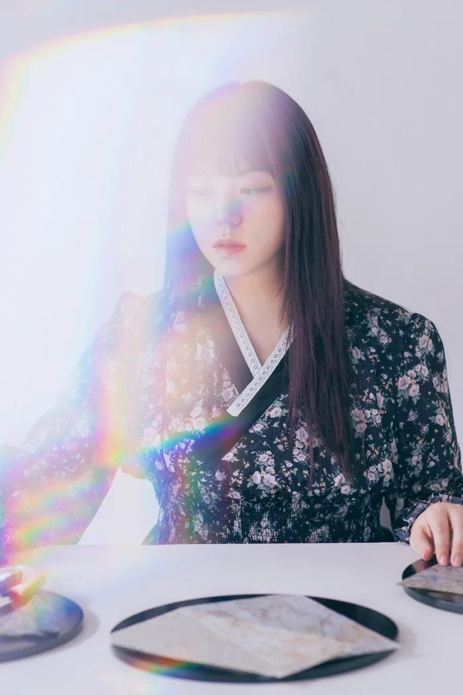

법과 사회의 규범, 그리고 그 안을 살아가는 개인의 이야기를 나전칠기로 표현하는 작가입니다.
법학을 전공하고 지식재산권법을 연구했으며, 법을 읽고 해석해 온 경험을 바탕으로 법률의 개념과 현대인의 일상을 작업의 소재로 가져옵니다. 법률 언어와 전통공예라는 서로 다른 두 영역을 연결하여, 익숙하지만 쉽게 보이지 않는 사회의 규칙과 개인의 관계를 시각적으로 풀어냅니다.
주요 재료로 천연자개와 옻칠을 사용합니다. 일정한 구조와 규칙 안에서도 조각마다 서로 다른 색과 빛을 내는 자개의 성질은 제 작업에서 중요한 조형 언어입니다. 저는 이를 통해 같은 사회와 규칙 안에서도 서로 다른 모습으로 살아가는 개인을 이야기합니다.
작품에는 제 페르소나인 캐릭터 '얼빵해달(Eolbbang Haedal)'이 등장하기도 합니다. 얼빵해달은 복잡한 법과 사회의 규칙을 관객의 일상 가까이 가져오는 매개이자, 그 안에서 살아가는 개인의 모습을 대신하는 존재입니다.
전통 나전칠기의 재료와 기술을 기반으로 평면 작업에서 오브제, 아트토이까지 작업 영역을 확장하고 있습니다.
불러오는 중…
전시, 작품, 기업 협업 및 라이선싱에 관한 문의를 받고 있습니다.
상세 포트폴리오는 요청 시 전달드립니다.